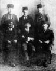
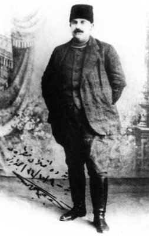
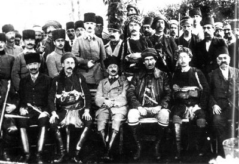

Mütareke’den sonra yurt dışına firar etmeğe hazırlanan Talat Paşa İttihatçıların meşhur Kara Kemal’ini yanına çağırarak İttihatçılık fikrinde devam edenleri korumak ve bu düşünceyi devam ettirebilmek için gizli bir cemiyet kurulmasını ve kararlaştırılan bir parola ile üyelerin birbirlerine bağlanmaları talimatını vermişti. Kara Kemal çalışmanın ilk hazırlıklarını Kara Vasıf ile birlikte yürütecekti.
Bu arada cemiyetin adı da gündeme gelmiş, Talat Paşa, Kara Vasıf ile Kara Kemal’in lakaplarından esinlenerek Karakol olmasını önermişti.
Daha sonra bu cemiyete yine eski ittihatçılardan Karadeniz Boğazı Kumandanı Erkân-ı harp Miralayı Galatalı Şevket, Erkân-ı harp Kaymakamı Kemalettin Sami, Erkân-ı harp Miralayı Edip Servet, Piyade Kaymakamı Japon Rıza, Karakol Cemiyeti’nin ilk merkez heyetini teşkil etmişti.[31]
Bu cemiyet ilk toplantısını göze görünmeyecek bir yerde Mahmud Paşa Camii avlusundaki kahvede yapmıştı.[32] Cemiyet’in isim babası Baha Sait Bey’dir. Cemiyetin rumuzu eski yazıdaki ilk harfleriyle Kaf-Gayn’dır. Bu rumuzla bir de mühür kazınarak yazışmaların resmileştirilmesi benimsenmişti. Teşkilinde ve nizamnamesinin yazılmasında İttihat ve Terakki Teşkilatı’ndan ve ruhundan ilham alınmıştır. Mesela azalarının isimleri meçhuldür ve numaralıdır. 55, 555, 88 gibi. Teşkilat üyeleri aralarında yaptıkları vazife taksiminde Kemaleddin Bey askerlerle, Kara Vasıf Bey Entelektüellerle, Ali Rıza Bey’de takacı, mavnacı gibi nakliyatçılarla temas kuracaklardı.
İlk semt gurupları Topkapı ve Üsküdar’da kurulmuştur. Karakol Teşkilatı’nın Nizamnamesi’nin, cemiyetin maksat ve gayesini belirten maddesinde şöyle denmektedir:
“Karokol Cemiyeti milletin birlik, hürriyet ve mutlak hakimiyetini, vatanın siyasi, coğrafî, iktisadî tamamiyet ve istiklalini temine çalışır. Milli ve mukaddes değerlerimize haleldar getirecek her nevi sözleşme, kayıt ve şartları kesin bir surette kökten reddeder.”
Karakol Cemiyeti’nin, Milli Mücadele’nin en kara günlerinde kendilerinden önemli istifadeler elde edilen birçok ordu mensubunu ve bilhassa yüksek rütbeli kumandanları Anadolu’ya geçirmek, işgal kuvvetlerinin muhafaza ve kontrolü altında bulunan silah ve cephane depolarını basarak, Anadolu’nun silah ve cephane ihtiyacını temin etmek gibi büyük yardım ve hizmetleri olmuştur.
Ayrıca İstanbul hükümetinin zaaflarından faydalanıp Türkler aleyhine her an taşkınlıklar göstermek için fırsat kollayan zararlı unsurların kötü niyetlerini önlemek vazifesini de mükemmelen yerine getirmiştir.
Bu vazifeleri hakkıyla yerine getiren Karakol mensupları için azami titizlikle uyulacak esaslar da belirlenmişti. Aslında İpsiz Recep Reis’in hayatı ve aksiyonları tek tek incelendiğinde tamamıyla bu kurallar çerçevesinde hareket etmiş olduğu görülecektir.

Karakol Cemiyeti’nin Kurucuları.
Oturanlar (Sağdan): Kara, Vasıf’ın kardeşi Fahreddin, Kara Vasıf, Dayı Mesut.
Ayaktakiler (Sağdan): Naim, Cevat, Kurmay Ali Rıza, Yenibahçeli Şükrü Oğuz
Karakol Cemiyeti’nin esasları
Her Karakol şubesi, hududu içinde ve civar bölgelerde gayrimüslim unsurların ihtilal hareketleri ile sırf cinayet, soygunculuk ve yolsuzluk yapmak amacıyla kurulmuş Müslim ve gayrimüslim her türlü çetelere karşı mücadele, asayişi temin ve ordunun hareketini kolaylaştırmak için en az bir muharebe çetesi teşkil etmekle mükelleftir. Muharebe çeteleri vilayet, sancak ve kazalarda, her biri 40 ilâ 200 neferden ve 1 ilâ 4 zabitten bucak ve köylerde 5-10 neferden ibarettir. Ve bunlara gerektiğinde makineli tüfek dahi verilir.
Muharebe çetelerini Karakol şubeleri en namuslu ve dindar ve faal ve fedakâr gençlerden seçip, teşkil ederler. Bunlar şahsî emeller ve ihtiraslar takip etmemek ve milletin selameti için kesin itaat ve hizmet ifâ eylemek üzere, kefalete bağlanıp şer’an da yemin ettirilirler.
Bu muharebe çetelerini, ihmal etmeden teşkil ve silahlandırıp teçhiz ederek derhal faaliyete başlamak ve az zamanda eşkıyayı ve zararlı unsurların siyaset çetelerini, takip, tenkil ve imha eyleyerek memleketin emniyet ve asayişini tesis ve idame eylemek Karakol şubelerinin en önemli ve acil vazifeleridir. Bunlar yapılırken namus ve vatanperverlik içerisinde tevazudan şaşmamak esastır. Karakol şubeleri bu muharebe çeteleri vasıtasıyla gayrimüslim unsurların ihtilal tertiplerini bozmak üzere, onların tüccarlarını nüfuz ve kudret sahibi ve ileri gelenlerini ve dışarıdan gelmiş ihtilalcileri idareye memur reislerini ve öteberi komitecilikle meşgul şerli şahıslarını dağlara kaldırıp rehin suretiyle muhafazaya ve Hristiyanların silahlarını toplayıp bunlarla kendi teşkilatını silahlandırmağa ait tedbirleri hemen hazırlar ve ilk emirde yapar. Yalnız ahval vahamet kesp ederek emir beklemek ve ihtilal ve katliamla neticeleneceği his olunursa, her şube emirsiz planını tatbik ve icra ile mükellef ve mesuldür.
Karakol’un azınlıkları yok etme ve zarara uğratma gibi bir gayesi yoktur. Yalnız sair unsurların Müslümanlara karşı yapacakları her türlü cinayet ve zararı misliyle cezalandırmayı vazifelerinden sayar ve bu sebeple kana kan, göze göz mala mal alır ve hem de mukabele-i bil misilde (misliyle karşılık vermede) asgarî iki misliyle hareket eder.
Aynı talimatnamenin (propaganda, şubeler tesisi, mahkemeler, ceza işleri) faslında da şu maddeler vardır:
Propaganda için gizlilik ve sır tutma konusunda hassasiyet sahipleri ve münevver (aydın) şahıslar seçilir. Bu zatlar vasıtasıyla büyük memurlar ve kumandanlar münevver ve mütefekkir kişiler iktidar ve liyakat sahipleri, zenginler ve memleketin hamiyet sahibi eşraf ve itibarlı kişileri kazanılarak karakol şubeleri çoğaltılır. Millî ve vatanî hizmetler kolaylaştırılması sağlanır. Propaganda da gaye, halkın fikrî birliği ve milletin istiklalinin temini ve Müslümanların meselelerinin yine Müslümanlar arasında halledilmesini sağlamaktır.
Hilafetin geleceği, milletin birliği, memleketin bütünlüğü halkın hürriyet ve hakimiyeti zararına kasten veya bir şahsî kanaat icabı mesaî sarf eden gazete, mecmua vesair yayınları yapanların aynı doğrultudaki teşkilat ve şahısların kanaat ve düşüncelerini değiştirmeye veya faaliyetlerini sonlandırmaya davet edilirler. Bu ihtarlara rağmen hâlâ faaliyetlerine devam etmeleri durumunda derhal idam olunurlar.
Hain şahısları idam için ayrıca fedailer teşkil olunur. Kaza ve daha büyük şubelerin birer fedaî teşkilatı olup aydın ve muktedir gençlerden kefaletle ve yemin ettirerek fedai kabul olunur. Fedailerin şahsı ve ailesi cemiyetçe hayatında ve ölümünde kefalet altındadır. Yalnız fedailerin hizmetleri karşılığında mevki veya memuriyet ve şahsî teferrüt ve nüfuz gibi gayri vatanî gibi isteklerde bulunmamaları esas şartlardandır.[33]
Cemiyetin, Anadolu yakası teşkilatı Yenibahçeli Şükrü (Oğuz)’un yönetimine verilmişti. Kadıköy mıntıkasına Orhan Veysel, Gebze’ye Dayı Mesut (Gürbüz), Şile’ye Yusuf Ziya (Şahap), Kartal’da İhsan, Beykoz’da Murat (Korsan) ve Kefken’e de İpsiz Recep Yenibahçeli’ye bağlı olarak faaliyet göstereceklerdi. Ayrıca birçokta silahlı ve seyyar müfrezeler bulunuyordu. Bu müfrezelerin bir vazifesi de İstanbul’dan Anadolu’ya geçirilecek asker ve sivil münevverlerle silah ve cephanelerin güvenli bir şekilde mahalline ulaştırılmasını sağlamaktı. Bunun için menzil teşkilatı adlı bir sistem oluşturulmuştu.
İpsiz Alaşehir Kongresi’ne katıldı mı?
Bu dönemde yapılan önemli etkinliklerin arkasında hep Karakol Cemiyeti’ni görmek mümkündür. Cemiyetin en etkin üyelerinden Kara Vasıf Bey’in de dahil olduğu önemli organizasyonlardan biri de kuşkusuz Alaşehir Kongresi’dir. Fakat burada asıl üzerinde durmak istediğimiz İpsiz Recep’in de bu kongreye katılıp katılmadığıdır.
Alaşehir Kongresi
Mondros Mütarekesi’nin yarattığı burukluk, Alaşehir’de de kendini hissettirmişti. Alaşehir’de tarım ve ticaret ile uğraşan Rumlar, metropolit denilen din adamı ve bazı bölücü kimseler vasıtası ile Yunanlılar ile temasa geçtiler. İzmir’deki hâdiseler, Alaşehir’de, Saruhan Mutasarrıflığının tel haberi ile duyuldu. Alaşehir Kaymakamı, İzmir’in yetiştirdiği aydınlardan Bezmi Nusret (Kaygusuz) idi. Onun, Alaşehirliler ile kurduğu diyalog, ilk anda millî hisleri galeyana getirdi. Bürokrasi, halk ve ileri gelenler elbirliği ettiler. Ancak, Mayıs 1919 sonlarına doğru Mutasarrıflık merkezi Manisa’nın da işgal edildiği ve Yunan Kuvvetlerinin Turgutlu’yu geçtikleri öğrenildi. Alaşehir’de, millî yapılanma bu esnada daha da belirginleşti ve Salihli önlerinde Sardes harabelerinde, düşmanı durdurma kararı alındı. Bandırma, Balıkesir, Akhisar yolu ile Salihliye gelen Bekir Sami (Günsav) ve bir kaç arkadaşı, ilk millî kuvveti burada ve Alaşehir’de meydana getirdi. Bozdağ ve Ödemiş grupları ile temas kuruldu ve birlikte hareket etme kararı alındı. Az sonra da Hamidiye Kahramanı Rauf (Orbay) ve arkadaşları Salihli ve Ödemişte Kuvay-ı Milliye ile temaslarda bulundular. İzmir’den ve Manisa’dan trenler sürekli göçmen taşıyorlardı. Bu insanlara, memurları Rum ve Ermeni olan demiryolcuların türlü hakaretlerde bulundukları da gözlenmekte idi. Ayrıca, Alaşehir Rumları da Türklere karşı tavır takınmışlar, Yunan ordusunun Alaşehir’e ulaşacağı günü sabırsızlıkla bekliyorlardı. Alaşehir’de Hristiyanlar için aynı zamanda kutsal bir makam da bulunuyordu. İncil’de de Alaşehir, “Philadelphia” olarak zikredilmesi sebebiyle bölge onlar için ayrıca bir kutsiyet arz ediyordu. Bu sebeple İstasyon memurları, Alaşehir ismini bile kaldırmışlar, biletleri “Philadelphia” diye vermeye kalkışmışlardı.
Ağustos 1919’da, İzmir-Bandırma Demiryolu üzerindeki Balıkesir’de, yasal hakları savunmak ve yeniden şekillendirmek için kongre toplanmış, Hacim Muhittin Bey önerisi ile diğer toplantının Alaşehir’de yapılması kararlaştırılmıştı. Bu yolda, komşu kasabalara ve merkezlere haber gönderildi. Kongre’nin Alaşehir’de, 16 Ağustos 1919 tarihinde toplanacağı duyuruldu. Alaşehir Kongresi, Batı Anadolu için önemli toplantılardan biridir.

Hacim Muhittin (Çarıklı)
İzmir’in işgali ile Erzurum ve Sivas Kongreleri toplanırken, Batı Anadolu’da da İzmir, Balıkesir, Nazilli ve Alaşehir Kongreleri çalışmalarını sürdürmüş ve önemli kararlar almışlardır. Alaşehir Kongresi; Alaşehir, Balıkesir, Buldan, Demirci, Eşme, İnegöl (şimdi Sarıgöl), Birgi, Ödemiş, Akhisar, Ayvalık, Aydın, Denizli, Sarayköy, Salihli, Turgutlu/Kasaba, Soma, Uşak, Kula, Karahisar-ı Sahib/Afyon, Manisa ve Nazilli’lerin katılımı ile 16 Ağustos 1919’da çalışmalarına başladı. Önce Şahyarlı Kuvay-ı Milliye’ci Mustafa Bey’in evinde sonra da Darü’l-Feyz adı verilen binada toplandı. Kongre Başkanı Hacim Muhittin Bey, Başkan Vekilleri Mustafa ve İbrahim (Uşak), Kâtipler ise Edhembeyzâde Ömer ve Müftizâde Abdülgafur (Balıkesir) tarafından temsil edildi. 25 Ağustos 1919’a kadar oturumlar hâlinde sürdürülen Kongre öncelikle idari kararlar alındı. Her kazanın kendisine düşen sorumlulukları belirlendi. Ayvalık, Soma ve Akhisar Cephesi’nden sorumlu I., II., ve III. Menzil Müfettişlikleri teşkil edildi. Harekât-ı Millîyelerin Kaza ve Cephe Teşkilâtlarına ait iş bölümleri yapıldı. Alaşehir Kongresi, 25 Ağustos 1919 günü sona erdi. Böylece Batı Anadolu Kongreler grubu içindeki tarihi rolünü gereği gibi yerine getiren, bir müddet sonra toplanmasına karar verilen III. Balıkesir Kongresi (16-22 Eylül 1919) için basamak teşkil edecektir.[34]
İpsiz Alaşehir Kongresi’nde var mıydı?
Fakat Rizeli bir korsan olarak bilinen İpsiz Recep’in daha önce hiçbir şekilde yolu düşmediği bu bölgelerde özellikle de Alaşehir’de işi neydi? Gerçekten İpsiz Recep Alaşehir Kongresi’nde var mıydı? İpsiz Recep hakkında yazı yazan ve araştırma yapan bazı şahıslar bir fotoğraftan yola çıkarak böyle bir iddiayı dile getirmektedirler. Hatta iddiadan da öte bu durumu tartışmasız ifade etmektedirler.[35]
Öncelikle şunu belirtmek lazım ki; Bu kongre hakkında en tafsilatlı bilgilerin yer aldığı Hacim Muhittin Çarıklı’nın “Balıkesir ve Alaşehir Kongreleri ve Hacim Muhittin Çarıklı’nın Kuvay-ı Milliye Hatıraları” adlı eserinin Alaşehir Milli Kongre Mukarreratı başlığı altında verilen kongreye iştirak eden murahhaslar arasında İpsiz Recep yer almamaktadır. Dahası kongre zabıtlarının hiçbir yerinde de İpsiz Recep, Recep Reis hatta Recep adında bir isme tesadüf edilememiştir.[36] Zaten İpsiz Recep’in Alaşehir Kongresi’ne katıldığını iddia edenler de sadece eldeki bir fotoğrafa bakarak söylemektedirler. Oysa bu fotoğraftaki işaret edilen şahıs bu tarihlerdeki İpsiz’in yaşına göre oldukça genç görünmektedir.[37] İkincisi kıyafeti Laz kıyafeti değildir. Üçüncüsü bu resimdeki şahıs gözlüklüdür; oysa İpsiz’in gözlük kullandığına dair başka bir resim veya rivayet yoktur. En önemlisi ise Alaşehir mahallî bir kongredir İpsiz Recep’in ise bu tarihlerde ve öncesinde bu bölge ile hiçbir alakası olmamıştır. Bu resimde İpsiz diye işaretlenen şahıs İpsiz Recep’e tip olarak benzetilmiş mahalli bir ileri gelen olmalıdır.

Alaşehir Kongresi’ne katılan heyet.